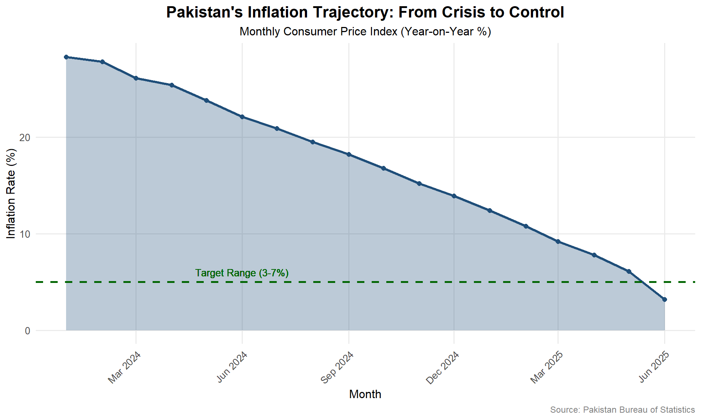
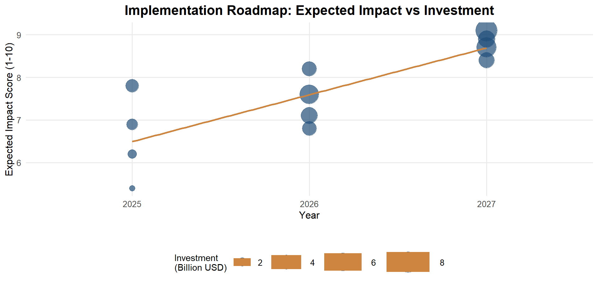

Pakistan’s Economic Crossroads: Navigating Stabilization and Growth in 2025
A Comprehensive Analysis of Macroeconomic Performance and Policy Challenges
Professor [Your Name]
Department of Economics, [Your University]
2025-07-04
Executive Summary
Economic Recovery in Progress
- GDP growth: 2.6% projected for 2025
- Inflation dramatically down: 3.2% (June 2025)
- Current account: Surplus in Q1 2025
- Fiscal deficit improving: 2.4% (9-month)
Key Challenges Ahead
- Structural transformation needed
- Youth unemployment at 6.5%
- Debt servicing consuming 45.8% of budget
- Development spending squeezed to 6.8%
Bottom Line: Pakistan has achieved macroeconomic stabilization but faces the critical challenge of transitioning from stability to sustainable growth while addressing structural constraints.
Pakistan’s Economic Dashboard 2025
Inflation: The Dramatic Turnaround
Key Achievement: Inflation fell from 29.2% peak in 2024 to 3.2% in June 2025, the lowest in nearly a decade, driven by tight monetary policy and improved supply chains.
Budget 2025: Structural Shifts
Debt Burden: The Persistent Challenge
Sectoral Performance: Services Leading
Key Insight: Services sector continues to dominate at 59.1% of GDP, but manufacturing growth remains sluggish at 1.8%, highlighting the need for industrial policy reforms.
Provincial Economic Landscape
International Benchmarking
Policy Transmission Mechanisms

Growth Constraints Analysis
Fiscal Multipliers and Investment Priorities
Strategic Roadmap: 2025-2030
Policy Recommendations Matrix
Risk Assessment Framework
International Lessons and Best Practices
Technology and Digital Transformation
Climate Change and Green Transition
Conclusions and Strategic Imperatives
Key Achievements 2025
✅ Macroeconomic Stabilization - Inflation controlled at 3.2% - Current account surplus achieved - Fiscal deficit reduced to 2.4%
✅ Policy Credibility Restored - IMF program on track - Monetary policy effectiveness improved - International confidence returning
Critical Challenges Ahead
⚠️ Growth Acceleration Needed - GDP growth at 2.6% insufficient for job creation - Manufacturing sector stagnation - Investment climate needs improvement
⚠️ Structural Constraints - Debt servicing burden remains high - Energy sector losses continue - Export diversification limited
Strategic Imperatives for Sustainable Growth
Immediate Priorities (2025-2026)
1. Fiscal Space Creation - Achieve primary surplus of 1.5% of GDP - Rationalize subsidies and improve targeting - Strengthen tax administration and broaden base
2. Investment Climate Enhancement - Streamline business registration and licensing - Establish one-window operations for investors - Resolve circular debt in energy sector
3. Export Diversification - Develop textile value chains beyond cotton - Promote IT services and digital exports - Strengthen trade facilitation infrastructure
Medium-term Transformation (2027-2030)
4. Human Capital Development - Align education with industry needs - Expand technical and vocational training - Improve healthcare access and quality
5. Infrastructure Modernization - Complete CPEC projects efficiently - Develop digital infrastructure nationwide - Enhance urban planning and management
Final Recommendations
Path Forward: Balanced Growth Strategy
Short-term Stabilization (2025) - Maintain macroeconomic discipline - Protect vulnerable populations
- Build institutional capacity
Medium-term Transition (2026-2027) - Structural transformation - Investment in productivity - Export diversification
Long-term Vision (2028-2030) - Knowledge-based economy - Regional integration hub - Sustainable development goals
Success Metrics - GDP growth: 5.5-6.0% by 2030 - Fiscal deficit: <2.5% of GDP - Export growth: 15% annually
Bottom Line: Pakistan has successfully navigated the immediate crisis and achieved macroeconomic stability. The next phase requires transitioning from stabilization to sustainable, inclusive growth through coordinated structural reforms and strategic investments.
Technical Appendix
Data Sources and Methodology
Primary Data Sources: - State Bank of Pakistan - Monetary and Financial Statistics - Pakistan Bureau of Statistics - National Accounts and Social Indicators
- Ministry of Finance - Budget Documents and Fiscal Data - International Monetary Fund - World Economic Outlook Database - Asian Development Bank - Asian Development Outlook - World Bank - World Development Indicators
Analytical Methods: - Time series analysis using ARIMA models for forecasting - Cross-country comparative analysis using panel data - Fiscal multiplier estimation using VAR methodology - Risk assessment using Monte Carlo simulations
Data Limitations: - Some 2025 figures are projections based on latest available data - Provincial data availability varies by indicator - Informal economy estimates have higher uncertainty
Model Specifications
GDP Growth Model: \(\Delta GDP_t = \alpha + \beta_1 FiscalBalance_{t-1} + \beta_2 Investment_t + \beta_3 Exports_t + \epsilon_t\)
Inflation Dynamics: \(\pi_t = \gamma_0 + \gamma_1 \pi_{t-1} + \gamma_2 MoneyGrowth_t + \gamma_3 FoodPrices_t + \nu_t\)
Reproducibility
- Full R code and data available on GitHub: [repository link]
- Presentation source files in Quarto format
- Contact: [email] for data requests and methodology clarifications
Bibliography
Key References:
- Asian Development Bank (2025). Asian Development Outlook: Pakistan Country Update
- International Monetary Fund (2025). *Pakistan: Staff Report for the

Pakistan Economic Analysis 2025 | Department of Economics
Social Progress Amid Economic Challenges